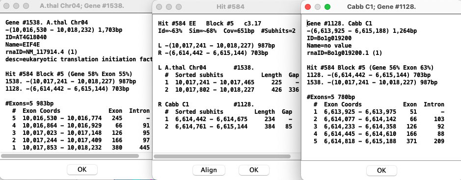

|
|
SyMAP User Guide |


|
|
|
|||
- Most of the contents also apply to the FPC-to-Seq view, where the specific information is provided in FPC specific.
- For detailed information on installation, see the System Guide.
- For a quick visual introduction, see the Tour.
- Please send bug reports and suggestions to symap@agcol.arizona.edu.
Contents
The Dot Plot and Circle displays are available from various places.- A. Main Display
- B. Display for Selected Pair (Two-Genome Views):
- C. Display for All Projects (Multi-Genome Views):
- Self-synteny Displays
- Data Download
- Print and Help
C. Soderlund, W. Nelson, A. Shoemaker and A. Paterson (2006)
SyMAP: A System for Discovering and Viewing Syntenic Regions of FPC maps
Genome Research 16:1159-1168.
C. Soderlund, M. Bomhoff, and W. Nelson (2010)
SyMAP: A turnkey synteny system with application to plant genomes.
Nucleic Acids Res 39(10):e68.
A. Main display | Go to top |
./viewSymapIs it also available from ./symap, where this display will also have the alignment commands.
|
All projects in the database will be listed on the left panel. If a date is beside the project name,
it has been loaded into the database on that date. If a [n] follows the date, it is part of n computed syntenies.
Selecting projects on the left panel shows them on the right panel. A check mark in the Available Syntenies table indicates pairs that have computed synteny that can be viewed. By selecting a cell with synteny, the Display for Selected Pair: buttons are activated. | 
|
B. Display for Selected Pair
The four buttons beside this label are "whole genome" displays for the selected pair (highlighted yellow).
Dot Plot (Two Genome) | Go to top |
|
The
individual grid boxes (cell) for each chromosome pair are referred to as Regions, and clicking
on a region brings up a larger-scale Region view.
Within the region view:
| 
|
Dotplot Control Panel | Go to top |

Home Resets the zoom selection to the full grid view of the entire dot plot.
Zoom The plus (+) and minus (-) buttons shrink or grow the display.
Scale The check box resizes the species displayed on the y-axis according to the current scale of the species displayed on the x-axis.
Reference The drop-down menu allows the reference species on the x-axis to be changed.
Size The slider increases/decreases the size of the dots in the display.
Dotplot Filters | Go to top |
|
The Filter image on the right indicates the default settings.
Show Only Block Hits A block hit is a hit that the SyMAP synteny-finding algorithm used to create a synteny block. Show All Hits Displays all hits. Note that the SyMAP hit loading algorithm removes some repetitive hits from the raw anchor set, so some hits from the raw BLAT or MUMmer files will not be shown. Highlight Block Hits Highlight hits that make up a synteny block in blue. Show Blocks This option draws blue rectangles around the synteny blocks. Show Empty Regions When deselected, hides regions that do not contain any synteny blocks. | 
|
Blocks Display (Two Genome) | Go to top |

| Clicking a chromosome pops up a window of the chromosome as shown below. Clicking
a block pops up a 2D view.
|

Circle Display (Two Genome) | Go to top |
|
The three controls on the left above the circle image control various aspects of the display.
The first two buttons (+, -) change the size, while the third rotates the image.
Scale to genome size: This checkbox causes the chromosomes to be drawn proportionately to their actual length in basepairs. Otherwise, each species is allocated the same amount of space, e.g. for two species each one gets exactly half the circle. Show all blocks: The drop-down menu has "Show inverted blocks", "Show non-inverted blocks", and "Two-color scheme", where this last option shows inverted=green, non-inverted=red. Self-align: This checkbox controls whether blocks are shown between chromosomes of the same species (if there is a check mark in the projects self-synteny cell indicating its been computed). Rotated text: Depending on the system, it may be easier (or harder) to read with the text rotated. |

|
Summary (Two Genome) | Go to top |

C. Display for All Projects
Select two or more projects and the "Chromosome Explorer" and "Dotplot" buttons will be activated.
Chromosome Explorer | Go to top |

Left panel: The left panel controls which species and chromosomes are shown:
- Click a chromosome rectangle to add it to the display in the right panel. Click it again to remove it.
- Click the chromosome number above a chromosome to make it the reference. (The choice of reference sequence does not matter for the circle view, but it is important for the 2D and Dot Plot views; see below).
- Adding and removing chromosomes affects the Circle view instantly. To add/remove from the 2D or Dot Plot views, open the Circle view, make the change, and then re-open the 2D or Dot Plot.
Instructions: As the mouse moves over various components, instructions for that component are shown in the Instruction box.
The four buttons in the lower-left corner of the window change the view in the right panel, where the choices are 2D, Dotplot, and Circle.
Download Blocks: Exports a table of all of the synteny block co-ordinates for the selected species; see also Data Download.
Click the minus (-) button next to a project name or the Instruction box, and that section will be hidden; the minus sign will change to a plus. Click the plus (+) button to show the project or Instruction box..
Right panel: The right panel shows the synteny display for the species and chromosomes selected on the left. There are three views: 2D, Dotplot, and Circle. The first three modes are essentially overview modes, while the 2D view allows zooming in to details, all the way to the basepair level if desired. Each right-panel display format has its own controls; see the individual sections for details.
Circle Display (Multi-chromosome) | Go to top |
Dot Plot (Multi-chromosome)
All features are described in the first dot plot section, except that it is chromosome-based instead of genome-based. Selecting a region followed by a synteny block (or selected region) brings up the 2D view.

|

|
2D Display (Multi-chromosome) | Go to top |
|
On the right is an image depicting an alignment from Rice Chr10 to Maize Chr1 to Sorghum Chr1.
Note that Maize Chr1 is the reference
chromosome, hence is placed in between the others.
The alignment window displays tracks (drawn as rectangles) of sequence information, showing synteny hits (drawn as lines) between tracks. Left click in a track shows the most commonly used filters and features (e.g. flipping the region). They are also on the filter menu above each track (e.g. Sequence Filter). See the Filter descriptions below. |

|
Control Panel and Navigation | Go to top |

History (Home, <, >) SyMAP retains a record of the prior views (like a web browser). The history navigation back (<) and forward (>) buttons allow you to move back and forth through the previous views. The Home button returns to the initial view.
Zoom Buttons (-, +) The zoom buttons allow for quickly expanding and narrowing the view region. The minus (-) button shrinks the view region by 50%, keeping the same center, while the plus (+) button doubles the view region, again keeping the same center.
Scale Button The Scale button (right of +) resizes the tracks so that they are in the same scale (base pairs per pixel) as the reference sequence track in the view.
Selected region This drop-down selector assigns a function to the mouse's left button click and drag actions:
| Zoom All Tracks | Zoom the track to the selected region and all other tracks with hits in the region. |
| Zoom Selected Track | Zoom to the selected region on the selected track; all other tracks do not change. |
| Align (Max 30000) | Open the base alignment view for the selected region (see Base View). No more than 30000 bases can be selected. |
| Show Sequence | The selected sequence will be shown in a popup. This has limited utility, but is the only way to the underlying sequence of a region than may or may not have hit. |
Colors Opens a menu for customizing colors.
Additional navigation:
| Resize Track | Drag bottom of track | Position mouse at bottom of track (resize cursor appears), hold down left mouse button, and move mouse. |
| Scroll Track | Mouse wheel | Position mouse over track and use mouse wheel. |
| Filter | Right mouse button | Position mouse over track or white space between tracks, and click right mouse button. |
Tracks in Main Panel | Go to top |
Sequence Track and Filter
A Sequence track may represent a sequenced chromosome, linkage group or scaffold. The sequence length and the coordinates of the displayed region are indicated above and below the track.Annotation data of the following types may be loaded into SyMAP and displayed. (Note that display colors can be changed.)
| Annotation Type | Display |
| Gaps | Red band across the chromosome |
| Centromere | Blue "X" across the chromosome |
| Predicted genes and exons | Annotation strip in center of chromosome (see image ) |
The sequence information displayed can be configured via the Sequence Filter by clicking the Sequence Filter button above the sequence track, or by right-clicking the mouse over the sequence track.
The example below shows a sequence-to-sequence alignment, which was derived by right-clicking at the top of the region, pulling down the mouse and releasing in order to view a small region.
|
The black lines with heavier blue bars interspersed down the center indicate exon/intron
predictions. A solid black line would indicate the absence of introns in the annotation.
The alternating brown/gray lines indicate anchor clusters. The solid brown lines indicate a single anchor (or multiple anchors very close together), while the gray lines are spaces with no alignment. The ruler on the right side of the sequence rectangle shows the relative BP position along the sequence. Additional information about each annotation may be seen by choosing "Show Annotation Description" from the Sequence Filter. |

|
| Right clicking everywhere but in a yellow annotation box provides a pop-up menu with most of the items found on the Sequence Filter. Right clicking on a yellow box results in a popup, as shown on the right; this is useful for copying all or part of the description, and when the box is partially hidden. |  |
The Sequence Filter allows the user to select the type of information shown for the sequence. It is accessed via the Sequence Filter button above the sequence track, or by right-clicking the mouse over the sequence track.
Start and End The positions of the sequence display can be set via the corresponding text boxes. The units of the values entered can be selected from the accompanying drop down menus (BP, KB, MB, GB).
Full Sequence Sets the start and end positions of the sequence display to encompass the whole chromosome.
|
Flip Reverses the orientation of the sequence track. Show Genes Enables/disables the display of gene/exon annotations along the sequence. Show Annotation Descriptions Enables/disables the display of the annotation descriptions along the right side of sequence. NOTE: this only works if you are zoomed in close enough that they can clearly be displayed. Show Gaps Enables/disables the display of sequence gaps (drawn as solid red rectangles) along the sequence. Show Centromere Enables/disables the display of the centromere (drawn as a cyan "X") on the sequence. Show Framework Markers Typically genetic markers or radiation hybrid markers. This option enables/disables the display of framework markers (drawn as solid green rectangles) along the sequence.
|

|
Show Ruler Enables/disables the display of the sequence ruler along the right side of the sequence.
Show Hit Length Enables/disables the display of the hit length line next to each hit along the sequence. The hit length line denotes the start and end points of the hits relative to the sequence (may not be visible for tiny hits).
Show Hit Score Line Enables/disables the display of the score line next to each hit along the sequence. The length of the line represents the magnitude of the % Identity value for the hit.
Show Hit Score Value Enables/disables the display of the score value next to each hit along the sequence. The score value corresponds to the % Identity value for the hit.
Hit Filter | Go to top |
|
The types of filter are as follows: Show Only Synteny Hits Shows only hits that are part of a synteny block. Show Only Hits to Genes Show only hits which intersect a gene annotation. Show Only Non-Gene Hits Show only hits which do not intersect a gene annotation. Show All Hits hows all known hits. |

|
Base View |
Go to top |

If there are multiple hits in the selected region, than the base view of those hits appears in a new dialog. This view consists of a ruler along the top showing the area of the sequence covered, the hits, and the genes.
Hits
Hits are displayed as lines with an arrow on one end showing the direction of the hit.
Clicking on a hit brings up the hit's
BLAST view in the bottom of the dialog. The hit presently shown in the BLAST view is
shown in gray. A vertical red line along a hit represents a mismatch .
A vertical green line
along a hit represents a deletion. An arrow pointing down (i.e. 'v') along a hit
represents an insertion.
Genes
Annotated genes are displayed below the hits. Exons are represented by a blue box, and
the leftmost or rightmost exon box will have an arrow tip indicating whether the gene
is on the + strand (right-pointing) or - strand (left-pointing) relative to the
sequence. The system attempts to expand the view to show the full gene that has
hits. Genes that overlap this gene will be partially shown.
Dot Plot (Multi-genome) | Go to top |

{kind=link}
SyMAP Queries | Go to top |
A. Locate homologous (or paralogous) regions based on annotation and location
B. Create putative gene families spanning multiple species, and apply family-based filters
Some sample queries which are possible through the interface:
• Find un-annotated regions on one genome which are homologous to regions on another genome which have already been annotated.
• Find putative gene families which are present in one lineage but absent in another.
• Identify the likely orthologs on genome A of a given gene on genome B, by using synteny blocks or exactly collinear pairs to filter out probable paralogs.
• Find orphan genes which are specific to one genome.
To open the query interface, first select two or more sequence projects in the Project Manager. Then press the "SyMAP Queries" button to open the interface:

The Overview window (above) lists the projects which were selected for querying. To set up a query, open the "Query Setup" window by clicking on its title in the left panel. This opens the window below:

Here you set up the query and then press "Run Search" to execute it.
The query occurs in two stages, corresponding to the section numbers on the Query Page. The second start, PgeneF, only runs if the "Compute PgeneF" is checked.
1. Filter hits
The first stage is to retrieve hits (anchors) from the database, based on filters such as chromosome and annotation string. Note that each anchor connects two species and hence represents a pair of putatively-related regions on the two species. The filters are described in the Help in the upper corner.Annotation Description
Enter a search string for any annotation keyword
(e.g. the gene name or description). Hits will be returned which overlap a matching annotation
on either side.
When looking for a particular gene, say "gene-LOC9268236", enter this into the text box and "Run Query". If there are no results, select "Only orphan genes" and run it again.
Collinear genes N>= N
Return only hits which are part of a pair of N aligning genes having no intervening
non-aligning genes. There is a column called "RunSize" that provides the number
of adjacent aligning genes. Note that this is not the same as synteny blocks, which
allows intervening non-aligning genes.
Show orphan genes
If checked, this shows all orphan genes for the project selected (or all projects).
That is, it shows genes that have no overlapping hits to ANY other project for which
it has been compared.
2. Filter putative gene families (PgeneFs)
Using the hits that pass the Stage 1 filters, SyMAP constructs putative gene families (PgeneFs) spanning the selected species. This is done by grouping hits whose hit regions overlap on at least one genome. Note, if you have more than 6 species selected, this stage can take an hour or more.Each PgeneF is given a number, which is shown in the Query Results table (column name "PgeneF"). The size of the PgeneF is also shown (column "PgFSize").
The filters are described in the Query Help page.
SyMAP Query Result Table
When the query is complete, the Query Results page opens showing the table of results:

The table contains all the hits (anchors) resulting from the query. Each hit connects two species and you can see the respective chromosomes and start/end locations of the hits, as well as gene annotations overlapped by the hits.
Note that the table contains columns for all of the selected species (see snapshot below), but each hit only connects two species, and the other species columns are empty. If the query specified orphan genes, then each row represents one gene and shows data only for one species.
The columns can be sorted by clicking on the column name, and rearrange them by dragging the header boxes.
Button functions
Show Synteny : Brings up a SyMAP 2-track view for each selected entry, so the hit can be seen in their full chromosomal context. The hit is initially padded to each side by the margin amount indicated (default 50kb), but you can easily zoom further out in the 2-track views.
Export CSV: Saves the selected hits (or entire table) using the selected set of columns to a CSV format suitable for import into Excel.
Save as Fasta: Sequences from the selected hits (or entire table) are written to a Fasta file. Both sides of each hit are written, using the start/end coordinates shown in the table.
Results Table Columns
You can add/remove columns using the Select Columns button at the bottom. This opens up a column-selection section. The columns are explain the the Help button on the table.
Self-synteny Display | Go to top |
The "SyMAP queries" does not work for self-synteny.
Data Download
There are two ways to download data for SyMAP synteny blocks, individual anchors, and annotations:- Through the Explorer. Select the species of interest, open the Explorer, and the download button is at the lower left. This exports a table of all the computed synteny block co-ordinates for all the selected species, including their self-alignments, if those were computed.
- Through the Query interface. For example, choosing two species and executing a query with the default parameters will show a table of all the anchors found between the two species, plus their annotations and synteny block membership, if any.
Print and Help | Go to top |
 set of icons.
set of icons.
The left icon is for printing the image. However, this does not work with all versions of Java. If it does not work, use the system "Screen Capture" (all the images in this document were created with screen capture, along with the images in the SyMAP publications).
The right icon brings up the this web page, typically to the correct section (obviously, there needs to be an internet connection).
3D Display (if available) | Go to top |